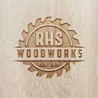

Premium Carpentry and Furniture Services
RHS Woodworks specializes in premium custom furniture and carpentry services in Yola. Our expert craftsmen are known for exceptional attention to detail and producing high-quality bespoke furniture and architectural woodwork.
Transform your space with RHS Woodworks' premium craftsmanship. Contact us for consultation.